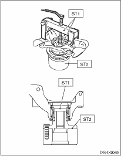
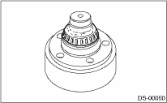
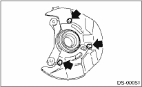
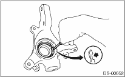
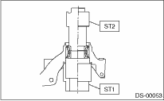

1. Using ST1, securely support the housing and hub.
2. Attach ST2 to housing and drive hub out.
| ST1 927060000 | HUB REMOVER |
| ST2 927080000 | HUB STAND |

If inner bearing race remains in the hub, remove it with a suitable tool (commercially available tools).
CAUTION:
Be careful not to scratch the polished area of the hub.

3. Remove disc cover from housing.

4. Remove the outer and inner oil seals using a flat tip screwdriver.
5. Remove the snap ring using a flat tip screwdriver.
CAUTION:
Be careful not to damage the housing during removal.

6. Using ST1, securely support the housing.
7. Using ST2, press the inner race, and push out the outer race of the bearing.
| ST1 927400000 | HOUSING STAND |
| ST2 927100000 | BEARING PULLER |

8. Using the ST and a hydraulic press, push out the hub bolts.
| ST 927080000 | HUB STAND |